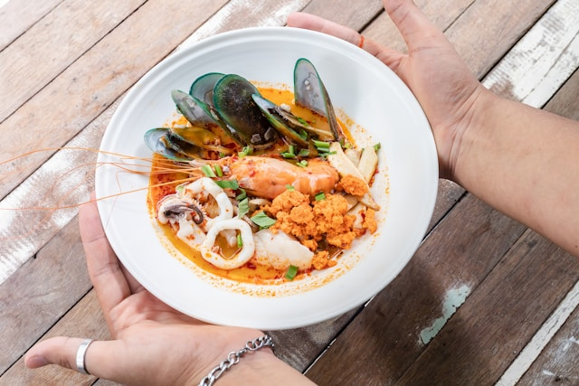

Рецепты супа Том-Ям

Восточный суп Том-Ям
Суп Том-Ям идеально подойдёт в сырую и влажную погоду. Например, осень - лучший период для приготовления такого супа.
Такой суп согреет и принесёт уют в ваш дом. Тем более готовится он очень быстро.
Ингридиенты
- Бульон - 1 литр
- Паста – 50 грамм том ям
- Шампиньоны - 50 грамм
- Маленький кусочек имбиря
- Лемонграс
- Помидоры Черри 10 штук
- Соус рыбный
- Крупные креветки
- Перец Чилли
- Кокосовое молоко
- Лимонный сок
Шаги
- Приготовить все ингридиенты
- Подождать когда закипит бульон и добавить в него имбирь и лемонграсс
- Нарезать грибы
- Добавить в бульон пасту "Том Ям", рыбный соус и грибы
- В кипящий бульон положить помидоры и креветки. Дать бульону закипеть.
- После закипания варить креветки 2 минуты
- Влить кокосовое молоко в бульон
- При подаче можно украсить кинзой
- Наслаждаться свежеприготовленным супом